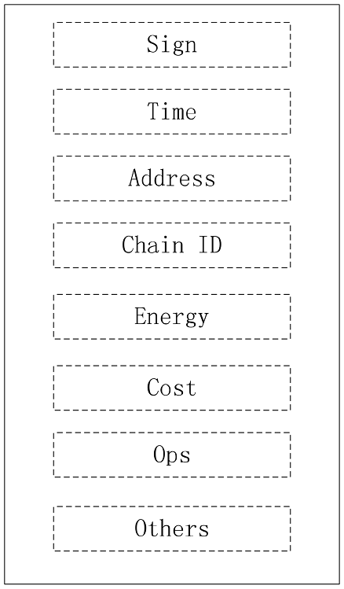

Transaktionen
Es gibt verschiedene Arten von Transaktionen. Unterschiedliche Transaktionen haben unterschiedliche Op-Codes. Der Vorteil ist hierbei, Nutzerverhalten klarzustellen und die Komplexit�t des Systems zu vereinfachen.
Op-Code Liste
- OpsTransfer: F�r on-Chain Transfer
- OpsMove: F�r ketten�bergreifende Transfers
- OpsNewChain: Um neue Child-Kette zu erstellen
- OpsNewApp: Um Smart-Contract zu erstellen
- OpsRunApp: Um Smart-Contract auszuf�hren
- OpsRegisterMiner: Um Miner zu registrieren
- OpsUpdateAppLife: Leben eines Smart-Contracts updaten
Datenstruktur der Transaktionen

Beschreibung der Mitglieder:
- Sign: Signatur-Information der Transaktion
- Time: Zeitstempel der Transaktion
- Address: Herkunft der Transaktion
- Chain ID: ID der Kette, von der die transaktion stammt
- Energy: Transaktionsgeb�hren
- Cost: Menge der Transaktion
- Ops: Operations-Code der Transaktion
- Others: Daten von verschiedenen Transaktionen
Aktualit�t der Transaktionen
Blocks k�nnen Transaktionen nur innerhalb von 10 Tagen empfangen. Transaktionen, die dieses Limit �bersteigen, werden gel�scht. Grund daf�r ist, dass das System gesteigerte Limitierungen f�r Proxy-Accounts besitzt (Ein neu hinzugef�gtes Konto in diesem System, das das Risiko einer �bersignaturierung von Konten verringern kann.)
Ketten�bergreifender Transfer
Das System unterst�tzt Transfers zu benachbarten Ketten (Eltern oder Kind). Wenn das System die �bertragungs-Transaktion verarbeitet, wird das jeweilige Token des Initiators abgezogen und die �bertragungs-Informationen werden im logSync-Objekt aufgezeichnet.
Wenn die benachbarte Kette den Block verarbeitet, wird es die logSync Information dieser Kette lesen. Falls die Zeit dieser Information die Anforderungen der Ziel-Kette erf�llt, transferiert das System die dazugeh�rigen Tokens. Nachdem der ketten�bergreifende Transfer in einen Block verarbeitet wurde, wird die Fertigstellung in 4-5 Minuten erf�llt (Synchronisationszeit f�r Informationen zwischen Ketten)